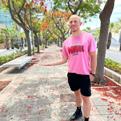

Videoita ja tehtäväpalautuksia
Satunnaisia videoita tietojenkäsittelyn tehtävistä sekä mm. Hack The Box -ratkaisuja ja projektipätkiä.
YouTubeTutustuin ohjelmointiin vuonna 2021 aiempien opintojen kautta, ja siitä lähti liikkeelle pysyvä kiinnostus teknologiaan. Suoritin sen jälkeen muutamia avoimen AMK:n opintoja, jotka rohkaisivat hakeutumaan monimuoto-opiskelijaksi IT-alalle Hämeen ammattikorkeakouluun.
Opiskelen työn ohessa, mikä on välillä ollut haastavaa – mutta samalla se on opettanut priorisointia ja tekemään asioita käytännönläheisesti: kokeilen, dokumentoin ja parannan. Minua motivoi erityisesti laitteiden ja järjestelmien “miksi” ja “miten” -tason ymmärtäminen sekä se fiilis, kun joku hankala ongelma lopulta ratkeaa.
Olen saanut käytännön kokemusta IT-tuesta ja päätelaiteympäristöstä harjoittelussa Porin kaupungin ICT-palveluissa. Työhön kuului mm. SCCM-pohjaiset Windows 11 -käyttöönotot, laitteiden elinkaaren hallintaan liittyviä tehtäviä, perustason vianrajausta ja käyttäjätukea. Lisäksi olin mukana Abitti 2 -ympäristön testauksessa ja dokumentoinnissa sekä palvelinympäristön suunnitteluun ja rakentamiseen liittyvissä kokonaisuuksissa.
Olen työskennellyt ammattikorkeakoulussa projektitutkijana ja hyvinvointisuunnittelijana vuodesta 2022 alkaen. Työhön on sisältynyt mm. M365-palveluiden käyttöä, sisäisen toiminnanohjausjärjestelmän kanssa työskentelyä, dokumentointia sekä projektien käytännön koordinointia.
Liikunta on iso osa arkea. Olen toiminut sekä koripallovalmentajana että ryhmäliikunnan ohjaajana vuodesta 2021 alkaen. Valmennus on kehittänyt erityisesti vuorovaikutus- ja ohjaustaitoja, suunnitelmallisuutta sekä kykyä antaa ja vastaanottaa palautetta.
Teen vapaa-ajalla projekteja, joissa yhdistyy käytännön ongelmanratkaisu ja oppiminen: esimerkiksi kotipalvelinympäristö, automaatioita sekä elektroniikka- ja ohjelmistoprojekteja. Näistä löytyy kooste Projektit-sivulta, ja lisämateriaalia GitHubista sekä YouTubesta.
Tämän sivuston ideana oli nimenomaan harjoitella web-kehitystä tekemällä avoimen lähdekoodin pohjaan oma verkkopohjainen CV (versiohallinta, pieniä UI-muutoksia ja julkaisu GitHub Pagesiin).
Alta löydät opintoihini ja projekteihini liittyvää sisältöä. Katso myös Projektit.

Satunnaisia videoita tietojenkäsittelyn tehtävistä sekä mm. Hack The Box -ratkaisuja ja projektipätkiä.
YouTube![]()
Projekteja ja harjoitteita, joita olen tehnyt itsenäisesti sekä oppimisalustojen (esim. freeCodeCamp) pohjalta.
GitHub